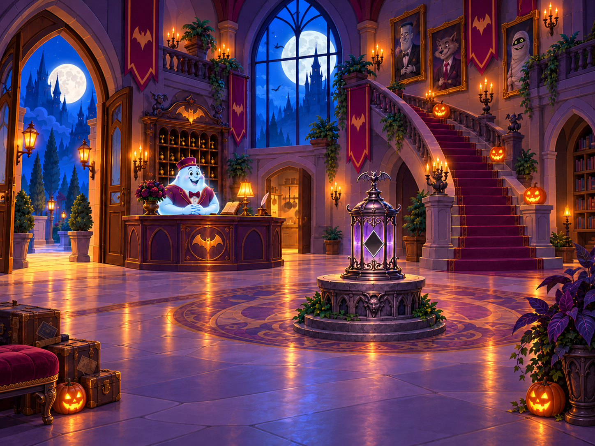
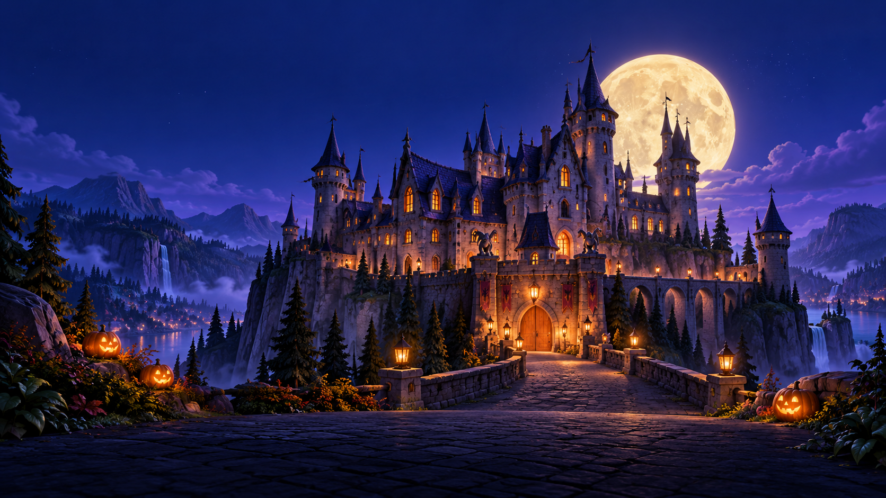

Тайна лунного фонаряПЕРВОЕ ДЕЛО МЭВИС
01 Холл отеля

ХЭЛЛОУИН В ОТЕЛЕ · ПЕРВОЕ ДЕЛО
Тайна лунного фонаря
До праздника осталось совсем немного.
Из алтаря исчез лунный кристалл.
Поможешь Мэвис найти его?
Готовим комнаты и анимации